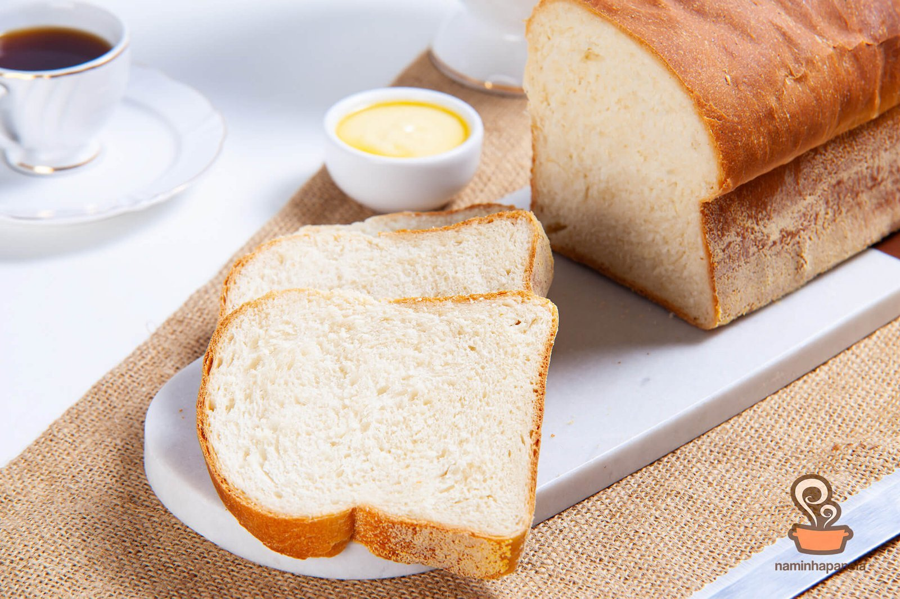

Salgados · Massas fritas/assadas
Pão de forma

Ingredientes
- 5 1/2 a 6 1/2 xícaras de farinha de trigo
- 2 colheres (chá) de sal
- 2 colheres (sopa) de manteiga
- 1 tablete (15 g) de fermento para pão
- 1 3/4 xícara de água morna
- Farinha e manteiga para untar
Modo de preparo
- Peneire farinha e sal; esfarele a manteiga. Faça um buraco no centro e adicione o fermento dissolvido na água morna.
- Misture e sove cerca de 10 min até liso e elástico.
- Deixe crescer até dobrar. Desgasifique, enrole em cilindro e coloque em forma de 900 g untada.
- Deixe crescer novamente. Asse em forno alto (230 °C) por 30–40 min até dourar e soar vazia ao bater na base.
- Esfrie em grade e congele embrulhado.
Observação
Rendimento: 1 pão. Descongele ~2 h em temperatura ambiente.